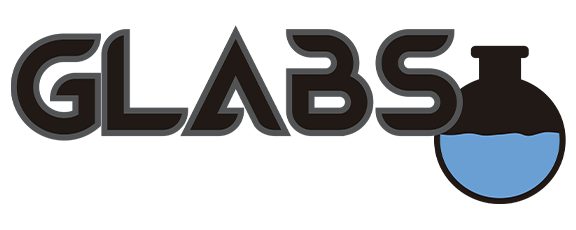
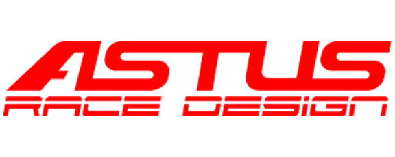
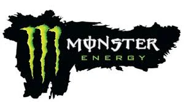
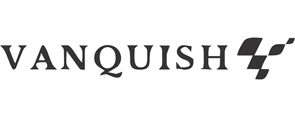

El sábado 30 de agosto vivimos una edición inolvidable de Sunset Drive en Playa Maldonado, a orillas del lago en Embalse de Calamuchita. Más de 100 autos deportivos, clásicos y exóticos se reunieron en un entorno único, donde miles de personas disfrutaron de shows en vivo de rally y acrobacia aérea. La experiencia se completó con food trucks, música, sorteos y una zona VIP exclusiva para participantes y sponsors. Fue una jornada que combinó pasión por los autos, naturaleza y entretenimiento, consolidando a Embalse como sede de uno de los eventos más esperados del año.


@0,5x.webp)
@0,5x.webp)
@0,5x.webp)
@0,5x.webp)
@0,5x.webp)
Un evento 100% tuerca, 100% solidario.
El evento reunió a más de 400 autos y motos en el Complejo Ferial Córdoba, donde más de 8.000
personas disfrutaron de una expo con marcas invitadas, sorteos, concursos de fotografía y dibujo, además de
muestras en vivo. Más de 150 autos participaron también en la carrera de regularidad organizada por Escudería
Mediterránea, recorriendo los paisajes más emblemáticos de las Sierras de Córdoba.
Fue una jornada única en la que el 100% de lo recaudado se destinó a Fundación Córdoba en Acción, Fundación Mi
Pueblo y Batman Solidario Córdoba. Un encuentro inolvidable que unió la pasión por los autos con la solidaridad,
creando conciencia y ayudando a quienes más lo necesitan, demostrando que la comunidad fierrera también tiene
un corazón solidario.
Instagram
@caravanasolidariacba


.webp)









Sunset Drive nació hace 3 años como una simple ruteada entre amigos. La gran repercusión y el entusiasmo del público nos impulsaron a llevar cada edición a un nuevo nivel, elevando la calidad y el profesionalismo de nuestros eventos, y creando experiencias inolvidables para cada participante.
Hasta hoy, hemos realizado +28 ediciones, reuniendo a +700 autos y +15.000 personas en distintos formatos y locaciones.
Contamos con un equipo de +20 colaboradores especializados en áreas como acreditaciones, ventas, marketing, diseño, publicidad, producción general, organización onsite, safety cars, media makers, entre otros.